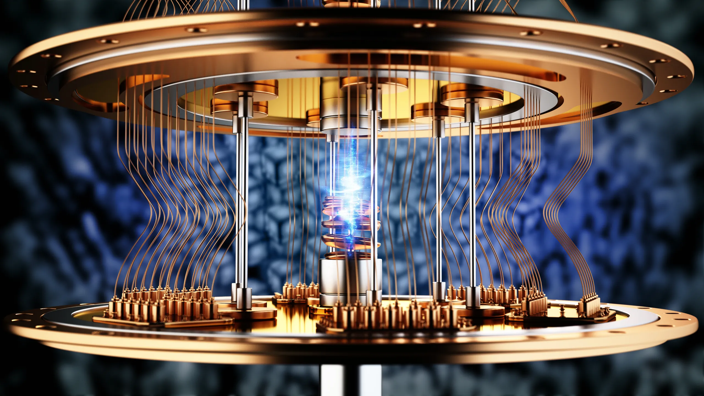

La computación cuántica o informática cuántica es un paradigma de computación distinto al de la informática clásica. Se basa en el uso de bits cuánticos (qbits), una combinación especial de unos y ceros. Los bits de la computación clásica pueden estar en 1 o en 0, pero solo un estado a la vez, en tanto que el cúbit puede tener los dos estados simultáneamente. Esto da lugar a nuevas puertas lógicas que hacen posibles nuevos algoritmos. Una misma tarea puede tener diferente complejidad en computación clásica comparada con la que tiene en computación cuántica, lo que ha dado lugar a una gran expectación, ya que algunos problemas intratables pasan a ser tratables. Mientras que un computador clásico equivale a una máquina de Turing, un ordenador cuántico equivale a una máquina de Turing cuántica. La doctora Talia Gershon (directora de Estrategia de Investigación e Iniciativas de Crecimiento en IBM) describe la computación cuántica, de manera muy general, como una combinación entre tres factores: la superposición de giros, el entrelazamiento de dos objetos y la interferencia, la cual ayuda a controlar los estados cuánticos y amplificar los tipos de señales que están orientados hacia la respuesta correcta, y luego cancelar los tipos de señales que conducen a la respuesta incorrecta. A medida que evoluciona la tecnología y se reduce el tamaño de los transistores para producir microchips cada vez más pequeños, esto se traduce en mayor velocidad de proceso. Sin embargo, no se pueden hacer los chips infinitamente pequeños, ya que hay un límite tras el cual dejan de funcionar correctamente. Cuando se llega a la escala de nanómetros, los electrones se escapan de los canales por donde deben circular; a esto se le denomina efecto túnel. Una partícula clásica, si se encuentra con un obstáculo, no puede atravesarlo y rebota. Pero con los electrones, que son partículas cuánticas y se comportan como ondas, existe la posibilidad de que una parte de ellos pueda atravesar las paredes si son lo suficientemente delgadas; de esta manera la señal puede pasar por canales donde no debería circular. Por ello, el chip deja de funcionar correctamente. La idea de computación cuántica surge en 1981, cuando Paul Benioff expuso su teoría para aprovechar las leyes cuánticas en el entorno de la informática. En vez de trabajar a nivel de voltajes eléctricos, se trabaja a nivel de cuanto. En la computación digital, un bit puede tomar solo uno de dos valores: 0 o 1. En cambio, en la computación cuántica intervienen las leyes de la mecánica cuántica, y la partícula puede estar en superposición coherente: puede ser 0, 1 y puede ser 1 y 0 a la vez (dos estados ortogonales de una partícula subatómica). Eso permite que se puedan realizar varias operaciones a la vez, según el número de cúbits. El número de cúbits indica la cantidad de bits que pueden estar en superposición. Con los bits convencionales, si se tenía un registro de tres bits, había ocho valores posibles y el registro solo podía tomar uno de esos valores. En cambio, si se tiene un vector de tres cúbits, la partícula puede tomar ocho valores distintos a la vez gracias a la superposición cuántica. Así, un vector de tres cúbits permitiría un total de ocho operaciones paralelas. Como cabe esperar, el número de operaciones es exponencial con respecto al número de cúbits. Para hacerse una idea del gran avance, un computador cuántico de 30 cúbits equivaldría a un procesador convencional de 10 teraflops (10 billones de operaciones en coma flotante por segundo), actualmente la supercomputadora convencional Summit tiene la capacidad de procesar 200 petaflops (200 mil billones).
Funcionamiento
En el modelo de cómputo tradicional el bit es la unidad mínima de información, el cual corresponde a un sistema binario, sólo puede tomar dos valores, representados por 0 y 1. Es posible usar y combinar más bits para representar mayor cantidad de información. Por el otro lado, en un sistema de cómputo cuántico la unidad mínima de información es el cúbit, el cual posee el principio de superposición cuántica, que permite al cúbit tomar diversos valores a la vez, puede ser 0 y 1, o bien es incluso posible que no sólo ocurra una superposición de ambos valores, sino que ocurra una superposición simultánea de todos los cúbits que se estén combinando, un conjunto de dos cúbits puede representar una superposición de valores: 00, 01, 10 y 11 a la vez. El incremento de la capacidad de superposición, equivale a una mayor capacidad de representación de información.
Entrelazamiento
El entrelazamiento es una cualidad con la que dos cúbits que han sido entrelazados (en una correlación) pueden ser manipulados para hacer exactamente lo mismo, garantizando que se puedan realizar operaciones en paralelo o simultáneamente. A este principio se le conoce como paralelismo cuántico, y permite que la capacidad de realizar operaciones en paralelo crezcan de manera exponencial en relación con el número de cúbits con los que puede operar el computador
Interferencia cuántica
Durante la manipulación de cúbits, se puede realizar una operación llamada interferencia cuántica, que aprovecha las propiedades de la superposición para reforzar o cancelar ciertos resultados, mejorando así la precisión y eficiencia de los cálculos,
Problemas
Uno de los obstáculos principales para la computación cuántica es el problema de la decoherencia cuántica, que causa la pérdida del carácter unitario (y, más específicamente, la reversibilidad) de los pasos del algoritmo cuántico. Los tiempos de decoherencia para los sistemas candidatos, en particular el tiempo de relajación transversal (en la terminología usada en la tecnología de resonancia magnética nuclear e imaginería por resonancia magnética), está típicamente entre nanosegundos y segundos, a temperaturas bajas. Las tasas de error son típicamente proporcionales a la razón entre tiempo de operación frente a tiempo de decoherencia, de forma que cualquier operación debe ser completada en un tiempo mucho más corto que el tiempo de decoherencia. Si la tasa de error es lo bastante baja, es posible usar eficazmente la corrección de errores cuántica, con lo cual sí serían posibles tiempos de cálculo más largos que el tiempo de decoherencia y, en principio, arbitrariamente largos. Se cita con frecuencia una tasa de error límite de 10–4, por debajo de la cual se supone que sería posible la aplicación eficaz de la corrección de errores cuánticos. El doctor Steven Girvin (profesor de física en el Instituto Cuántico de Yale), cuyo enfoque principal es la corrección de errores cuánticos y tratar de comprender el concepto de tolerancia a fallos, dice que «todos creen saberlo cuando lo ven, pero nadie en el caso cuántico puede definirlo con precisión». Así mismo, menciona que en un sistema cuántico, cuando se observa la tolerancia a fallos o se realizan mediciones, el sistema puede cambiar de una manera que está fuera de control. Otro de los problemas principales es la escalabilidad, especialmente teniendo en cuenta el considerable incremento en cúbits necesarios para cualquier cálculo que implica la corrección de errores. Para ninguno de los sistemas actualmente propuestos es trivial un diseño capaz de manejar un número lo bastante alto de cúbits para resolver problemas computacionalmente interesantes hoy en día.
Aspectos éticos
inicialmente la iniciativa en el avance de la computación cuántica la tenían las Universidades, siendo sustituido en gran parte por empresas privadas. Por primera vez estamos llegando a ver un nivel de avance tecnológico espectacular en manos privadas en el mundo de la computación cuántica. Esto supone un peligro ético con respecto a cómo va a ser utilizado, con qué objetivos, con que supervisión y con qué sesgos. Con el fin de utilizar de manera efectiva la computación cuántica, es crucial que los expertos y los gobiernos aborden las cuestiones éticas y establezcan directrices comunes. Estas directrices éticas servirán como base para desarrollar una legislación adecuada que regule el uso responsable de la computación cuántica, asegurando así un entorno ético y seguro para su aplicación. Existen muchos campos que se beneficiarán con el uso de la computación cuántica, como la química cuántica, la inteligencia artificial, la ciberseguridad y todos los procesos de optimización, no obstante, en manos equivocadas, esto supondría un peligro en lugar de un avance, por lo que es fundamental reflexionar sobre estos retos para garantizar un uso responsable y beneficioso de estas tecnologías.
Privacidad y seguridad
La capacidad de la computación cuántica para romper la criptografía convencional plantea dilemas éticos en cuanto a la protección de la privacidad individual y la seguridad colectiva. Esto plantea preocupaciones sobre la seguridad de los datos personales y confidenciales, ya que la información que actualmente consideramos segura podría volverse vulnerable a los ataques cuánticos. Los avances en la computación cuántica también podrían facilitar la decodificación de comunicaciones cifradas previamente, lo que podría tener implicaciones en la privacidad de las personas y en el espionaje cibernético. Por este motivo ya se están investigando nuevos esquemas de cifrado simétrico.
Desigualdad y brecha tecnológica
El desarrollo y mantenimiento de la computación cuántica es una tarea compleja y costosa. Esto podría generar una brecha tecnológica entre aquellos que tienen acceso a esta tecnología y aquellos que no. Si únicamente algunos países, empresas o individuos cuentan con acceso a la computación cuántica, existe el riesgo de ampliar la desigualdad tecnológica y económica en el mundo. Esta situación podría tener impactos éticos negativos, como profundizar las divisiones entre ricos y pobres y limitar las oportunidades para aquellos que no tienen acceso a esta tecnología.
Impacto ambiental
La computación cuántica requiere una gran cantidad de recursos, incluida energía, para su funcionamiento. Los sistemas de computación cuántica necesitan enfriarse a temperaturas extremadamente bajas, lo que consume una cantidad significativa de energía. Esto plantea preocupaciones en relación con el impacto ambiental de la computación cuántica a gran escala y su posible contribución a los desafíos del cambio climático y la sostenibilidad.
Ética en la IA cuántica
La intersección entre la inteligencia artificial (IA) y la computación cuántica también plantea desafíos éticos adicionales. A medida que se desarrollen algoritmos de IA cuántica más potentes, es crucial considerar aspectos como la responsabilidad y el control humano sobre las decisiones tomadas por sistemas de IA cuántica, la explicabilidad de los resultados generados por dichos sistemas y las posibles implicaciones de su mal uso.
Genoma humano y guerra tecnológica
El avance de la computación cuántica plantea preocupaciones éticas sobre la manipulación nociva del genoma humano y para la creación de nuevos materiales para la guerra. Es importante abordar estas preocupaciones desde una perspectiva ética y asegurar que el desarrollo y la implementación de estas tecnologías se realicen de manera responsable y equitativa.
Impacto sobre la seguridad de las comunicaciones
Es un hecho que el cómputo cuántico revolucionará de manera exponencial diversos sectores, entre ellos destacan las telecomunicaciones; lo cual afectará también la criptografía y la seguridad de las comunicaciones en internet. Actualmente hacemos uso de la criptografía asimétrica en cada uno de los sitios web. Pues los dos algoritmos del cifrado asimétrico más usados son RSA, cuya complejidad de factorización es de números grandes, y la criptografía basada en la estructura matemática de las curvas elípticas (ECC). Surge como problema que estos métodos de criptografía serían fácilmente descifrables para una computadora cuántica. Pues pueden desarrollarse algoritmos que son capaces de aprovechar el paralelismo cuántico para resolver dichos problemas matemáticos complejos.
Repercusiones sobre la privacidad en internet
El cómputo cuántico no acabará con la privacidad en internet, sin embargo, sí afectará y hará obsoletos los principales métodos de cifrado actuales, como el RSA y ECC. Actualmente se están investigando nuevos esquemas de cifrado asimétrico que garanticen la privacidad en las comunicaciones y que no sean vulnerables a la computación cuántica. Dichas investigaciones están agrupadas en 4 grupos principales:
- Criptografía asimétrica basada en la teoría de redes o lattices, en vez de utilizar un problema de factorización de números se usan los problemas matemáticos de complejidad NP-Completos de encontrar el vector más corto (SVP) o encontrar el vector más cercano (CVP). Algoritmos ya desarrollados sobre esta base: «Goldreich-Goldwasser-Halevi (GGH)» y «Number Theory Research Unit (NTRU)».
- Criptografía multivariable, basada en polinomios multivariables en un cuerpo finito. Algoritmos ya desarrollados sobre esta base: «Unbalanced Oil and Vinegar»
- Criptografía basada en códigos de corrección de errores. Algoritmos ya desarrollados sobre esta base: «McElice».
- Esquemas de cifrados de firmas digitales basados en resúmenes o hashes. Algoritmos ya desarrollados sobre esta base: «Lamport» y «Merkle»
Posibilidades que ofrece la criptografía cuántica
Gracias a las características que posee la mecánica cuántica y al principio de incertidumbre de Heisenberg, la criptografía cuántica puede garantizar confidencialidad absoluta al posibilitar el intercambio seguro de claves entre 2 entes, a pesar de que el canal de comunicaciones este siendo escuchado por un externo. Ya que la interacción de este intruso modificaría la información transmitida. Esto es aprovechado por algoritmos que intercambian claves cuánticas; para garantizar (por probabilidad) que solo el emisor y el receptor conocen la clave.